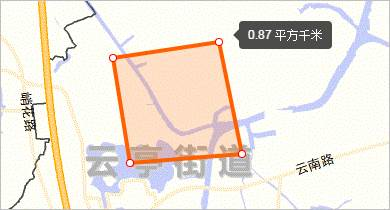
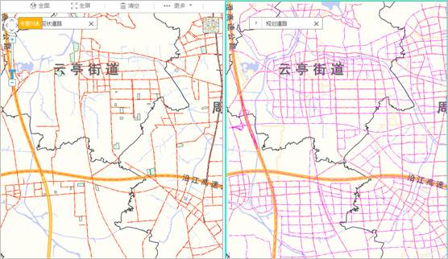
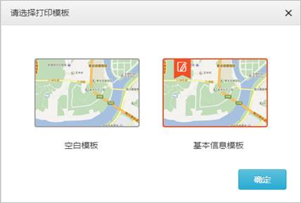

1 文档介绍
1.1 编写目的
为了使用户更快的熟悉规划“一张图”产品的操作方法，规范系统操作步骤，缩短操作上手时间，特编写用户操作手册。
1.2 读者对象
本用户操作手册的主要对象是：
规划“一张图”产品的相关用户。
2 系统概述
规划“一张图”面向规划编制、实施、监管、评估的业务全过程，建设规划数据资源中心，提供保障数据资源中心运行的标准、工具以及机制，形成覆盖“地上地面地下”空间维度、“过去现在未来”时间维度的空间信息服务框架。
3 功能说明
3.1 领导桌面
u 功能说明
推送城市规划编制、业务审批的总体情况。
u 操作说明
系统登录后，默认进入规划“一张图”首页的领导桌面，重点展示城市的规划编制、业务审批的总体情况。
3.2 用户中心
3.2.1 密码修改
u 功能说明
修改当前账号的密码。
u 操作说明
点击首页右上角的“设置”按钮，弹出设置面板，默认显示“修改密码”，输入当前账号的原密码、新密码、确认新密码等信息，点击“保存”按钮，弹出保存成功提示框，点击确认后即可完成密码修改。
3.2.2 头像修改
u 功能说明
修改当前账号的头像。
u 操作说明
点击首页右上角的“设置”按钮，弹出设置面板，默认显示“修改密码”，切换至“修改头像”，选择本地头像图片，点击“保存”按钮，弹出保存成功提示框，点击确认后即可完成头像修改。
3.2.3 注销
u 功能说明
注销当前账号。
u 操作说明
点击首页右上角的“退出”按钮，即可注销当前账号，返回登陆页。
3.3 地图操作
3.3.1 全图
u 功能说明
提供地图全图居中显示。
u 操作说明
点击“全图”按钮，地图将在界面中显示全图。
3.3.2 前一视图
u 功能说明
将地图视窗跳转至前一视图。
u 操作说明
点击“更多”选中“前一视图”按钮，地图视窗自动跳转至前一视图。
3.3.3 后一视图
u 功能说明
将地图视窗跳转至后一视图。
u 操作说明
点击“更多”选中“后一视图”按钮，地图视窗自动跳转至后一视图。
3.3.4 全屏
u 功能说明
提供地图全图居中显示。
u 操作说明
点击“全屏”按钮，地图将在浏览器中全屏显示，点击“退出全屏”按钮，将退出全屏状态。
3.4 地图工具
3.4.1 距离测量
u 功能说明
提供在地图视窗量算折线长度的功能。
u 操作说明
点击“距离测量”按钮，在地图上点击画折线直至终点双击，结束画线，系统将计算出折线长度。

3.4.2 面积量测
u 功能说明
提供在地图视窗测量选中图形面积的功能。
u 操作说明
点击“面积量测”按钮，在地图上点击画面直至终点双击，结束画面，系统将计算出所选区域的面积。

3.4.3 标绘
u 功能说明
支持在图面上标注点、线、面等各种要素。
u 操作说明
悬停“标绘”按钮，弹出标绘管理框。
（1） 点标
点击标注管理框的“点标”按钮，，在地图视窗对应位置上单击即可标注“点”。
（2） 标注
点击标注管理框的“标注”按钮，在地图视窗对应位置上单击即可标注“点”，在信息框中填写该标注的名称、备注信息。
（3） 线标
点击标注管理框的“线标”按钮，在地图视窗对应位置上单击直至终点双击即可标注“折线”，在信息框中填写该标注的名称、备注信息。
（4） 圆形
点击标注管理框的“圆形”按钮，在地图视窗对应位置上单击直至终点放开鼠标即可标注“圆形”，在信息框中填写该标注的名称、备注信息。

（5） 矩形
点击标注管理框的“矩形”按钮，在地图视窗对应位置上单击直至终点放开鼠标即可标注“矩形”，在信息框中填写该标注的名称、备注信息。
（6） 多边形
点击标注管理框的“多边形”按钮，在地图视窗对应位置上单击直至终点双击即可标注“多边形”，在信息框中填写该标注的名称、备注信息。
3.4.4 分屏
u 功能说明
提供地图分屏浏览模式
u 操作说明
悬停“分屏”按钮，弹出分屏管理框，当前地图界面将按照选中的分屏个数展示，选中需要操作的屏，可以进行数据叠加操作。

3.4.5 属性查询
u 功能说明
在地图上点选，可以查询当前要素的基本属性信息。
u 操作说明
在进行数据查询前，需要先打开对应图层。点击“属性查询”按钮，，点选地图上叠加要素，界面右侧将弹出属性查询框，查询框里将查询结果按全部、各图层分标签页展开，右侧详情可以查看要素的具体属性信息。
3.4.6 数据叠加
1、CAD叠加
u 功能说明
支持用户从本地直接调取相应的CAD数据等内容作为临时图层进行快速加载。
u 操作说明
（1）鼠标悬停 “更多”按钮 ，选中“叠加CAD”按钮 ，弹出【叠加CAD文件】对话框，双击“选择”按钮，弹出文件选择框，选择对应CAD文件后，点击“打开”按钮返回【叠加CAD文件】对话框。
（2）CAD图形设置中设置上传成功后显示的线型、颜色。

（3）点击“确定”按钮，系统上传并加载CAD数据。
2、SHP叠加
u 功能说明
支持用户从本地直接调取相应的shp数据等内容作为临时图层进行快速加载。
u 操作说明
（1）鼠标悬停 “更多”按钮 ，选中“叠加SHP”按钮 ，弹出叠加【叠加SHP文件】对话框，双击“选择”按钮，弹出文件选择框，选择对应shp文件后，点击“打开”按钮返回【叠加shp文件】对话框。
（2）点击“确定”按钮，系统上传并加载shp数据。
3.4.7 图片输出
u 功能说明
支持在线定制打印样式并输出
u 操作说明
（1）鼠标悬停 “更多”按钮 ，选中“图片输出”按钮 ，在【请选择打印模板】对话框选择模板，点击“确定”按钮，进入打印信息设置面板。

（2）打印信息设置面板中可配置标题、图例、备注等信息，点击“打印”按钮，弹出地图预览页，可利用浏览器进行保存或在线打印操作。
3.4.8 清空
u 功能说明
清除图面上生成的临时要素。
u 操作说明
点击“清空”按钮，可以清除图面上生成的临时要素。
3.5 规划专题
3.5.1 编制一张图
u 功能说明
提供城市规划编制专题信息
u 操作说明
（1）点击“规划专题”按钮，地图左侧将展开专题面板，鼠标悬停“编制专题”图标，图标右侧将展开专题信息框，选中“编制一张图”，编制一张图专题打开。
（2）地图默认叠加编制进度专题图，同时在地图右侧推送城市整体编制情况，包括城市总体规划编制情况、控制性详细规划编制情况，并提供城市各区域控制性详细规划编制进度一览表。
（3）点击“控制性详细规划”标签，地图右侧推送控制性详细规划的编制项目信息，项目信息以“全部、正在编制、编制完成、已批复”的项目状态分标签页展开，地图上气泡对应标示出信息面板中项目所在位置。
（4）切换项目状态标签页，将获得不同状态项目信息，地图上同步以气泡对应标示出信息面板中项目位置。
（5）点击项目“详情”按钮，进入详情页查看项目信息。
3.5.2 项目一张图
u 功能说明
提供项目进度专题信息
u 操作说明
（1）点击“规划专题”按钮，地图左侧将展开专题面板，鼠标悬停“项目一张图”图标，图标右侧将展开专题信息框，选中“项目一张图”，项目一张图专题打开。
（2）地图默认叠加项目进度专题图，同时在地图右侧推送项目一张图的项目信息，项目信息以“全部、选址、出让、用地、工程、跟踪、核实”的项目状态分标签页展开，地图上气泡标示出信息面板中项目所在位置。
（3）鼠标悬停在信息面板某一项目气泡，气泡将变为蓝色，地图上同步以蓝色气泡具体标示出该项目位置。
（4）切换项目状态标签页，将获得不同状态项目信息，地图上同步以气泡标示出信息面板中项目位置。
（5）点击信息面板中某一项目“详情”图标，将进入项目详情页，得到项目信息及主要指标信息。
（6）点击项目详情页中的“项目详情”图标，将跳转至OA系统，默认打开该项目当前进度的表单。
（7）点击“地块分析”按钮，将对该项目所在地块进行“地块分析”，得到该地块规划编制、规划实施项目及指标参考信息。
3.5.3 时限一张图
u 功能说明
提供项目时限专题信息
u 操作说明
（1）点击“规划专题”按钮，地图左侧将展开专题面板，鼠标悬停“实施专题”图标，图标右侧将展开专题信息框，选中“时限一张图”，时限一张图专题打开。
（2）地图默认叠加项目时限专题图，同时在地图右侧推送时限一张图的项目信息，项目信息以“全部、超时案件、即将超时案件”的项目状态分标签页展开，地图上气泡标示出信息面板中项目所在位置。
（3）鼠标悬停在信息面板某一项目气泡，气泡将变为蓝色，地图上同步以蓝色气泡具体标示出该项目位置。
（4）切换项目状态标签页，将获得不同状态项目信息，地图上同步以气泡标示出信息面板中项目位置。
3.5.4 批后一张图
u 功能说明
提供城市规划批后监管专题信息
u 操作说明
（1）点击“规划专题”按钮，地图左侧将展开专题面板，鼠标悬停“批后专题”图标，图标右侧将展开专题信息框，选中“批后一张图”，批后一张图专题打开。
（2）地图默认叠加批后进度专题图，同时在地图右侧推送城市批后监管情况，包括批后跟踪情况、违规项目情况，提供城市各区域批后跟踪进展一览表、违规项目分布一览表。
（3）点击“批后跟踪情况”标签，地图右侧推送批后管理的项目信息，地图上气泡标示出信息面板中项目所在位置。
（4）更换区域、阶段筛选条件，将获得限定区域、阶段的项目信息，地图上同步以气泡标示出信息面板中项目位置。
（5）点击项目“详情”按钮，可以进入详情页查看项目信息。
（6）回到【整体情况】标签页，点击“违规项目情况”标签，地图右侧推送批后中监管到的违规项目信息，地图上气泡标示出信息面板中项目所在位置。
（7）更换区域、阶段筛选条件，将获得限定区域、阶段的项目信息，地图上同步以气泡标示出信息面板中项目位置。
（8）点击项目“详情”按钮，可以进入详情页查看违规项目信息。
3.6 分析
3.6.1 地块全生命周期
u 功能说明
提供地块全生命周期管理，关联展示地块上编制、审批以及批后监管信息
u 操作说明
（1）鼠标悬停“分析”按钮，选中“地块全生命周期”按钮，地图上默认加载城市控规规划用地数据；

（2）选中规划用地某一地块，该地块将高亮显示，地图右侧同步推送地块全生命周期信息面板，面板分为规划编制、规划审批、批后监管三个标签页，默认显示规划编制信息；
（3）规划编制标签推送该地块对应上位规划（含总体规划、分区规划、控制性详细规划）编制版本情况，并给出在上位规划中对应的地块链接，可以点击查看上位规划地块指标详情；
（4）规划审批标签推送该地块关联的审批项目情况，地图上同步以气泡标示项目的位置，点击“详情”按钮可进一步查看项目详情；
（5）批后监管标签推送该地块关联的批后项目情况，地图上同步以气泡标示项目的位置，点击“详情”按钮可进一步查看项目详情；
补图
3.6.2 用地平衡分析
u 功能说明
提供城市建设用地的用地类型构成以及布局
u 操作说明
（1）鼠标悬停“分析”按钮，选中“用地平衡分析”按钮，打开用地平衡分析功能面板，地图上默认加载城市控规规划用地数据；
（2）点击“行政区域”按钮，选中行政区域名称，将获得该行政区域规划用地的用地平衡表，包括不同规划用地类型的现状/规划用地面积、现状/规划用地面积比例、现状/规划人均用地面积指标信息，平衡表下面的图形区域同步推送分析区域内的城市建设用地平衡饼状图以及细类的柱状图；

（3）点击用地平衡表中的带“+”符号的行 ，表格将展开，用户可以获得该行对应用地类型下细类的用地平衡结果，包括细类的现状/规划用地面积、现状/规划用地面积比例、现状/规划人均用地面积指标信息；
，表格将展开，用户可以获得该行对应用地类型下细类的用地平衡结果，包括细类的现状/规划用地面积、现状/规划用地面积比例、现状/规划人均用地面积指标信息；
（4）点击“区域绘制”按钮，可以在地图上自定义用地平衡分析的区域范围，获得绘制区域的用地平衡分析结果；
（5）点击“范围线上传”按钮，可以调用系统【添加CAD】、【添加SHP】功能上传范围，获得分析范围内的用地平衡情况。
3.6.3 用地开发强度
u 功能说明
提供城市建设用地开发强度构成以及分布
u 操作说明
（1）鼠标悬停“分析”按钮，选中“用地开发强度”按钮，用地开发强度功能面板打开，地图上默认加载城市控规规划用地数据；
（2）点击“行政区域”按钮，选中行政区域名称，获得该行政区域规划用地的容积率指标分布情况，饼状图同步展示容积率在不同区间的用地面积、建筑面积占比情况；
（3）点击“绿地率”、“建筑密度”标签，可以获得该行政区域规划用地的绿地率、建筑密度指标分布情况，饼状图同步展示绿地率、建筑密度在不同区间的用地面积、建筑面积占比情况；
（3）点击“区域绘制”按钮，可以在地图上自定义用地开发强度的区域范围，获得绘制区域的用地开发强度情况；
（4）点击“范围线上传”按钮，可以调用系统【添加CAD】、【添加SHP】功能上传范围，获得分析范围内的用地开发强度情况。
3.6.4 用地审批
u 功能说明
提供城市规划用地审批业务综合信息
u 操作说明
（1）鼠标悬停“分析”按钮，选中“用地审批”按钮，用地审批面板打开；

（2）用地审批面板分为统计时间、统计类型、统计结果三大区域，用户通过统计时间区域选择需要统计的时间区间，通过统计类型区域选择“按照用地类型”、“按照行政区划”的统计类型，通过统计结果区域获得选定时间、类型的审批用地分类情况；
（3）点击统计结果区域右上角“显示数据表”按钮，统计结果区域推送统计结果的列表信息。
3.6.5 可用地存量
u 功能说明
提供城市建设用地存量情况
u 操作说明
（1）鼠标悬停“分析”按钮，选中“用地存量分析”按钮，地图右侧推送用地存量分析面板，默认推送城市建设用地存量情况，包括城市建设用地八种用地类型的总用地面积、剩余用地面积指标情况，以柱状图、表格的形式展示；
（2）通过“区域选择”切换区域，可以获得不同区域的城市建设用地存量情况；
（3）点击“查看详细”按钮，可以获得城市建设用地八种用地类型的细类用地存量情况；
3.6.6 净容积率分析
u 功能说明
提供城市建设用地净容积率情况
u 操作说明
（1）鼠标悬停“分析”按钮，选中“净容积率分析”按钮，地图默认加载控规规划用地数据，界面弹出净容积率分析面板；
（2）点击净容积率分析面板中“范围选择”按钮，界面弹出“分区查询”面板；
（3）点击“面选择”按钮，鼠标移动到地图区域中，绘制需要进行净容积率分析的多边形区域，双击结束绘制，点击“确定”按钮，回到净容积率分析面板；
（4）在净容积率分析面板中选择进行分析的用地类型，点击“开始分析”，获得绘制区域、指定用地类型的净容积率分析结果，包含总建筑面积、总地块面积、净容积率等指标信息。

3.6.7 指标分析
u 功能说明
提供选定地点总规、控规、用地、竣工指标对比
u 操作说明
（1）鼠标悬停“分析”按钮，选中“指标对比”按钮，地图右侧推送指标对比面板，默认推送总规、控规、用地、竣工指标对比表，包含容积率、绿地率、建筑密度、建筑高度、用地性质指标；
（2）点击地图区域，将获得该地点的总规、控规、用地、竣工指标对比情况。
补图